소음진동기사(구) (2009-05-10 기출문제)
1과목: 소음진동개론
1. 등방향성 점음원이 건물내부의 2면이 만나는 모서리에 있다. 이 음원으로부터 10m 거리에 있는 위치에 음압레벨은? (단, 음원의 음향파워레벨은 1⑤dB이며, 구면파 전달로 가정한다.)
- 70 dB
- 74 dB
- 77 dB
- 80 dB
(정답률: 알수없음)

2. 가로 7m, 세로 3.5m 의 벽면밖에서 음압레벨이 1⑤dB 이라면 12m 떨어진 곳은 몇 dB 인가? (단, 면음원 기준)
- 76.4 dB
- 85.8 dB
- 88.9 dB
- 92.3 dB
(정답률: 알수없음)
3. 음원으로부터 10m 지점의 평균음압도는 101dB, 등거리에서 특정지향음압도는 108dB 이다. 이 때 지향계수는?
- 2.11
- 2.56
- 4.82
- 5.01
(정답률: 알수없음)
4. 항공기의 소음에 관한 설명으로 틀린 것은?
- 발생원이 상공이기 때문에 피해면적이 넓은 편이다.
- 항공기의 소음은 간헐적이고 충격적이다.
- PNL 값은 항공기소음 평가의 기본값으로 많이 사용되기도 한다.
- 젯트기의 소음은 금속성의 저주파수 성분이 주가 된다.
(정답률: 알수없음)
5. 소음과 관련된 A와 B의 용어의 연결로 옳지 않은 것은?
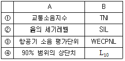
- ①
- ②
- ③
- ④
(정답률: 알수없음)
6. 점음원과 선음원(무한장)이 있다. 각 음원으로부터 10m 떨어진 거리에서의 음압레벨이 100dB 이라고 할 때, 1m 떨어진 위치에서의 각각의 음압레벨은? (단, 점음원 - 선음원 순서이다.)
- 120dB - 110dB
- 110dB - 120dB
- 130dB - 115dB
- 115dB - 130dB
(정답률: 알수없음)
7. 정상청력을 가진 사람의 기청음압 범위가 아래와 같을 때, 이것을 음압레벨로 표시하면? (단, 범위 : 2 x 10-5 ~ 60 N/m2)
- 1 ~ 120.5 dB
- 1 ~ 124.5 dB
- 1 ~ 129.5 dB
- 1 ~ 135.5 dB
(정답률: 알수없음)
8. 인체의 청각기관에 대한 다음 설명으로 옳지 않은 것은?
- 외이도는 일단개구관으로 동작되어 음을 증폭시키는 공명기 역할을 한다.
- 고실과 이관은 중이에 해당하며, 망치뼈는 고막과 연결되어 있다.
- 귀의 주요 구성요소로는 외이, 중이, 내이 순이며, 음을 감각하기까지의 음의 전달매질은 기체, 액체, 고체 순이다.
- 이소골은 고막의 진동을 고체진동으로 변환시켜 외이와 내이를 임피던스매칭하는 역할을 한다.
(정답률: 알수없음)
9. 주파수 및 청력에 대한 설명으로 가장 거리가 먼 것은?
- 일반적으로 주파수가 클수록 공기흡음에 의해 일어나는 소음의 감쇠치는 증가한다.
- 사람의 목소리는 대략 100~10000[Hz], 회화의 이해를 위해서는 500~2500[Hz]의 주파수 범위를 갖는다.
- 청력손실은 청력이 정상인 사람의 최대가청치와 피검자의 최대가청치와의 비를 dB로 나타낸 것이다.
- 노인성 난청이 시작되는 주파수는 대략 6000[Hz]이다.
(정답률: 알수없음)
10. 음과 관련한 법칙 및 용어설명으로 옳지 않은 것은?
- 백색잡음은 모든 주파수의 음압레벨이 일정한 음을 말한다.
- 음-헬므홀츠법칙은 인간의 귀는 순음이 아닌 여러 가지 복잡한 파형의 소리도 각기의 순음의 성분으로 분해하여 들을 수 있다는 음색에 관한 법칙이다.
- 스넬의 법칙은 음의 회절과 관련한 법칙으로 장애물이 클수록 회절량이 크다.
- 웨버-훼이너법칙은 감각량은 자극의 대수에 비례한다는 법칙이다.
(정답률: 알수없음)
11. FWL 80dB인 기계 10대를 동시에 가동하면 몇 dB의 PWL을 갖는 기계 1대를 가동시키는 것과 같은가?
- 86 dB
- 90 dB
- 93 dB
- 95 dB
(정답률: 알수없음)
12. 음압이 35Pa이면 소리의 세기로 몇 W/m2인가? (단, 공기밀도는 1.2kg/m3, 음속은 344m/sec 이다.)
- 4.5 W/m2
- 3 W/m2
- 1.5 W/m2
- 1 W/m2
(정답률: 알수없음)
13. 진동의 수용기관에 관한 설명으로 틀린 것은?
- 소음의 수용기관에 비해 진동의 수용 기관은 명확하지 않은 편이다.
- 진동에 의한 물리적 자극은 신경의 말단에서 수용된다.
- 동물실험에 의하면 pacinian소체가 진동의 수용기인 것으로 알려져 있다.
- 진동자극은 유스타키오관을 통하여 시상에 도달한다.
(정답률: 알수없음)
14. 진동감각에 관한 설명으로 틀린 것은?
- 수직 및 수평진동이 동시에 가해지면 2배의 자각현상이 나타난다.
- 15Hz 부근에서 심한 공진현상을 보이고, 2차적으로 40~50Hz 부근에서 공진형상을 나타나지만 진동수가 증가함에 따라 감쇠가 급격히 감소한다.
- 진동가속도레벨이 55dB 이하인 경우, 인체는 거의 진동을 느끼지 못한다.
- 진동에 의한 신체적 공진현상은 서 있을 때가 앉아 있을 때보다 약하게 느낀다.
(정답률: 알수없음)
15. 음에 대한 일반적인 설명으로 가장 거리가 먼 것은?
- 복합음의 파형은 순음의 파형보다 복잡하지만 주기적으로 안정된 파형이 반복되는 소리이다.
- 모든 상음성분의 주파수가 기본 주파수의 정수배인 복합음은 단음이라 한다.
- 일상생활에서는 대부분 순음으로 들으며, 이 순음은 산업현장에서 실제 측정값으로 주로 사용된다.
- 잡음은 일정한 파형이 없으며 일정한 소리의 높이로 감각을 주지 않는 편이다.
(정답률: 알수없음)
16. 30phon에서 60phon으로 음의 크기레벨이 변하면 sone 은 몇 배로 변화 되겠는가?
- 2배
- 4배
- 6배
- 8배
(정답률: 알수없음)
17. 사람의 외이도 길이를 3.5m 라 할 때, 25℃ 공기 중에서의 공명주파수는?
- 25Hz
- 50Hz
- 2474Hz
- 4949Hz
(정답률: 알수없음)
18. 소음의 영향에 관한 다음 설명 중 거리가 먼 것은?
- 소음의 신체적 영향으로는 혈당도 상승, 백혈구 수 증가, 혈중 아드레날린 증가 등이 있다.
- 4분법 청력손실이 옥타브밴드 중심주파수 500 ~ 2000Hz 범위에서 15dB 이상이 되면 난청이라 한다.
- 소음성 난청은 내이의 세포변성이 주요한 원인이다.
- 영구적 청력손실(PTS)을 소음성 난청이라고도 한다.
(정답률: 알수없음)
19. 입사측의 음향 임피던스를 Z1, 투과측의 음향 임피던스를 Z2라 하면, 경계면에서 수직입사하는 음파의 반사율 r0는 다음 식과 같이 주어진다. Z2가 Z1의 1/5이라면, 투과에너지 It와 반사에너지 Ir과의 비는 Ir/It는? (단, 경계면에서 음파의 흡수는 일어나지 않는다.)
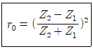
- 2/5
- 4/5
- 5/2
- 5/4
(정답률: 알수없음)
20. 소음레벨(SL)의 표현식으로 옳은 것은? (단, SPL : 음압레벨, σ: 측정소음의 표준편차 LR : 청감보정회로에 의한 주파수대역별 보정치이며, 단위는 dB(A) 이다. )
- SL=SPL+LR
- SL=SPL+2.56σLR
- SL=SPL/2.56LR
- SL=SPLx2.56LR
(정답률: 알수없음)
2과목: 소음방지기술
21. 6m x 4m x 5m의 방이 있다. 이 방의 평균 흡음율이 0.2 일 때 잔향시간은?
- 0.65 sec
- 0.86 sec
- 0.98 sec
- 1.21 sec
(정답률: 알수없음)
22. A시료의 흡음 성능을 측정하기 위해 정재파 관내법을 사용하였다. 1000Hz, 순음인 sine파의 정재파비가 3 이었다면 이 흡음재의 흡음율은?
- 0.99
- 0.89
- 0.75
- 0.56
(정답률: 알수없음)
23. 음이 수직 입사할 때 이 벽체의 반사율은 0.45 이었다. 이 때의 투과손실(TL)은? (단, 경계면에서 음이 흡수되지 않는다고 가정한다.)
- 약 1.5 dB
- 약 2.0 dB
- 약 2.6 dB
- 약 3.5 dB
(정답률: 알수없음)
24. 소음기의 성능을 나타내는 용어 중 삽입손실치에 대한 정의로 가장 적합한 것은?
- 소음원에 소음기를 부착하기 전과 후의 공간상의 어떤 특정위치에서 측정한 음압레벨의 차와 그 측정위치
- 소음기 내의 두 지점 사이의 음향파워의 손실치
- 소음기가 있는 그 상태에서 소음기의 입구 및 출구에서 측정된 음압레벨의 차
- 소음기를 투과한 음향출력에 대한 소음기에 입사된 음향출력의 비(입사된 음향출력/투과된 음향출력)
(정답률: 알수없음)
25. 어떤 벽체의 두께를 10cm로 했을 때 면밀도가 25kg/m2이다. 500Hz에서 두께 10cm의 벽 2개 사이에 충분한 공간(15cm 이상)을 두었을 경우 음파가 난입사할 때의 투과손실은? (단, 질량법칙을 적용한다.)
- 약 67 dB
- 약 59 dB
- 약 42 dB
- 약 36 dB
(정답률: 알수없음)
26. 흡음재의 선정 및 사용상 유의점으로 틀린 것은?
- 방의 모서리나 가장자리 부분에 부착하는 것이 효과가 크다.
- 다공질 재료의 표면을 도장하면 고음역에서 흡음율이 증대된다.
- 다공질 재료의 표면을 다공판으로 피복할 경우 가급적 계공율을 30% 이상으로 하는 것이 좋다.
- 다공질 재료의 표면에 종이를 바르는 것은 피해야 한다.
(정답률: 알수없음)
27. 아래표는 각 재질의 1/3 옥타브 대역으로 측정한 중심 주파수에서의 흡음율을 나타낸다. 이들 재질 중 가장 큰 감음계수를 갖는 개질은?
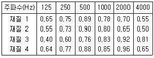
- 재질 1
- 재질 2
- 재질 3
- 재질 4
(정답률: 알수없음)
28. 음파가 벽면에 수직입사할 때 주파수가 1000Hz이고, 면밀도가 22kg/m2인 단일벽체의 투과손실은?
- 34 dB
- 40 dB
- 44 dB
- 48 dB
(정답률: 알수없음)
29. 크기가 5m x 3m인 창 외부로부터 음압레벨 100dB의 음이 입사되고 있다. 이 벽면의 투과손실이 250dB이고, 실내의 흡음력이 30m2 일 때, 실내의 음압레벨(dB)은?
- 70 dB
- 74 dB
- 78 dB
- 82 dB
(정답률: 알수없음)
30. 바닥면적이 5m x 5m 이고, 높이가 4.5m 인 방의 흡음율이 바닥 0.2, 천장 0.1, 벽 0.6 이었다. 만약 천장을 흡음율 0.5인 자재로 흡음처리한다면 실내소음저감량은?
- 약 1.25 dB
- 약 2.87 dB
- 약 4.16 dB
- 약 5.58 dB
(정답률: 알수없음)
31. 원형 흡음덕트의 흡음계수(K)가 0.29 일 때, 직경 85cm, 길이 3.5m인 덕트에서의 감쇠량은? (단, 덕트 내의 흡음재료의 두께는 무시한다.)
- 약 4.3 dB
- 약 4.8 dB
- 약 5.3 dB
- 약 5.8 dB
(정답률: 알수없음)
32. 날개수 6개의 송풍기가 90000 cycles/hr로 운전되고 있을 때 기본음 주파수는?
- 1500 H
- 500 Hz
- 250 Hz
- 150 Hz
(정답률: 알수없음)
33. A차음재료의 투과손실이 40dB이라면 입사음 세기는 투과음 세기보다 몇 배가 되겠는가?
- 1/10000
- 1/4
- 4
- 10000
(정답률: 알수없음)
34. 다음 ( )안에 알맞은 것은?
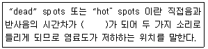
- 0.⑤초
- 1초
- 5초
- 15초
(정답률: 알수없음)
35. 40m x 12m 인 콘크리트 벽의 투과손실은 47dB 이며, 이 벽의 중앙에 크기 3m x 7m의 문을 달아 총합 투과손실이 38dB되게 하고자 할 때 이 문의 투과손실은?
- 약 15 dB
- 약 20 dB
- 약 25 dB
- 약 30 dB
(정답률: 알수없음)
36. 다음 중 방음벽에 관한 설명으로 가장 거리가 먼 것은?
- 방음벽에 의한 소음감쇠량은 주로 반응벽의 높이에 의하여 대부분 결정된다.
- 방음벽은 벽면 또는 벽상단의 음향특성에 따라 흡음형, 반사형, 간섭형, 공명형 등으로 구분된다.
- 방음벽은 사용되는 재료에 따라 금속제형, 투명형, PVC형 등으로 구분된다.
- 방음벽은 기본적으로 음의 굴절감쇠를 이용한 것이다.
(정답률: 알수없음)
37. 흡음덕트형 소음기의 최대 감음 주파수의 범위로 가장 적합한 것은? (단, 덕트 내경=0.5m, 음속=340m/sec 기준)
- 340Hz ＜ f ＜ 680Hz
- 170Hz ＜ f ＜ 340Hz
- 200Hz ＜ f ＜ 400Hz
- 100Hz ＜ f ＜ 200Hz
(정답률: 알수없음)
38. 소음방지 대책을 소음원 대책과 전파경로 대책으로 구분할 때 다음 중 소음원 대책으로 가장 거리가 먼 것은?
- 장비를 구성하는 구조 부재의 감쇠력을 증가시킨다.
- 공장벽체의 차음성을 강화한다.
- 고소음 장비의 동시 운전을 피한다.
- 주거지역 소음발생 시 야간 작업을 줄인다.
(정답률: 알수없음)
39. 직관 흡음 덕트형 소음기에 관한 설명으로 틀린 것은?
- 덕트의 최단 횡단길이는 고주파 beam을 방해하지 않는 크기여야 한다.
- 감음의 특성은 중ㆍ고음역에서 좋다.
- 덕트의 내경이 대상음의 파장보다 큰 경우는 덕트를 세분하여 cell형이나 splitter형으로 하여 목적주파수를 감음시킨다.
- 통과 유속은 20m/s 이하로 하는 것이 좋다.
(정답률: 알수없음)
40. 단일벽의 차음특성 중 투과손실이 옥타브당 6dB씩 증가하는 영역은?
- 감성제어영역
- 감쇠제어영역
- 질량제어영역
- 일치효과영역
(정답률: 알수없음)
3과목: 소음진동 공정시험 기준
41. 1일 동안의 평균 최고소음도가 1⑤dB(A)이고, 1일간 항공기의 등가통과횟수가 5⑤회 일 때 1일 단위의 WECPNL(dB)은?
- 약 94
- 약 98
- 약 101
- 약 1⑤
(정답률: 알수없음)
42. 측정소음도가 92dB(A), 배경소음도가 87dB(A)일 때 대상소음도는?
- 91 dB(A)
- 90 dB(A)
- 89 dB(A)
- 88 dB(A)
(정답률: 알수없음)
43. 소음계의 청감보정회로를 A 보정레벨을 사용하는 이유로 가장 적합한 것은?
- 측정치의 정확성을 기하기 위하여
- 측정치의 통계처리가 용이하기 때문에
- 전 주파수 대역에서 평탄한 특성을 가지기 때문에
- 인체의 청감각과 잘 대응하기 때문에
(정답률: 알수없음)
44. 항공기 소음한도 측정에서 항공기소음 측정점 선정시 원추형 상부공간이 의미하는 것은?
- 측정위치를 지나는 지면 또는 바닥면의 법선에 반각 15℃ 의 선분이 지나는 공간을 말한다.
- 측정위치를 지나는 지면 또는 바닥면의 법선에 반각 30℃ 의 선분이 지나는 공간을 말한다.
- 측정위치를 지나는 지면 또는 바닥면의 법선에 반각 60℃ 의 선분이 지나는 공간을 말한다.
- 측정위치를 지나는 지면 또는 바닥면의 법선에 반각 80℃ 의 선분이 지나는 공간을 말한다.
(정답률: 알수없음)
45. 진동레벨기록기를 사용하여 5분이상 측정ㆍ기록한 기록지상의 지시치가 불규칙하고, 대폭적으로 변하는 경우의 측정진동레벨을 정하는 방법으로 가장 적합한 것은? (단, 배출허용기준 측정기준)
- 구간내 최대치 10개를 산술평균 한다.
- 10초간격으로 30회 판독하여 Leq 값을 구한다.
- 5초간격으로 50회 판독치에 따른 누적도곡선으로 산정한 L10값을 구한다.
- 최고치와 최저치를 판독하여 중앙값을 구한다.
(정답률: 알수없음)
46. 진동배출시설이 설치된 공장의 진동측정지점의 선정으로 가장 적합한 것은?
- 진동배출시설을 운영하는 사업장의 부지경계선과 가장 큰 피해가 우려되는 장소의 중간지점
- 진동원으로부터 가장 먼 부지경계선
- 진동원으로부터 가장 가까운 부지경계선
- 공장의 부지경계선 중 피해의 우려가 있는 장소로서 진동레벨이 높을 것으로 예상되는 지점
(정답률: 알수없음)
47. 진동레벨계의 사용기준 중 진동픽업의 횡감도는 규정 주파수에서 수감축 감도에 대하여 최소 몇 dB 이상의 차이가 있어야 하는가? (단, 연직특성)
- 5 dB
- 10 dB
- 15 dB
- 20 dB
(정답률: 알수없음)
48. 측정진동레벨과 배경진동레벨의 차가 9dB(V)일 때 보정치는? (단, 단위는 dB(V))
- 0
- -1
- -2
- -3
(정답률: 알수없음)
49. 진동픽업에 관한 설명 중 가장 거리가 먼 것은?
- 동전형 진동픽업은 지르콘규산납(ZrPbSio3)의 소결체가 주로 사용된다.
- 가동 코일형의 동전형 진동픽업은 전자형이다.
- 압전형 진동픽업은 바람의 영향을 받으므로 바람을 막을 수 있는 차폐물의 설치가 필요하다.
- 동전형 진동픽업을 대형전기기기 등에 설치할 때는 전자장의 영향을 받기 쉬우므로 특히 주의가 필요하다.
(정답률: 알수없음)
50. 다음은 배경소음 보정에 관한 설명이다. ( )안에 가장 알맞은 것은?
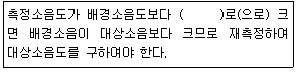
- 10dB 이상
- 2dB 이상
- 10dB 이하
- 2dB 이하
(정답률: 알수없음)
51. 발파진동 측정시 디지털 진동자동분석계를 사용하여 측정 진동레벨을 분석할 때 샘플주기는 최대 얼마 이하로 해야 하는가?
- 0.1초
- 0.5초
- 1.0초
- 5.0초
(정답률: 알수없음)
52. 배경소음에 관한 다음 설명 중 옳은 것은?
- 정상조업중의 공장의 야간 소음도
- 소음발생원을 전부가동시킨 상태에서 측정한 소음도
- 공장의 가동을 중지한 상태에서 측정한 소음도
- 대상공장의 주ㆍ야간 소음도의 차
(정답률: 알수없음)
53. 소음계의 구조별 성능에 관한 설명으로 가장 거리가 먼 것은?
- 마이크로폰은 지향성이 큰 압력형으로 하며, 기기의 본체와 분리가 가능하여야 한다.
- 교정장치는 80dB(A)이상이 되는 환경에서도 교정이 가능하여야 한다.
- 레벨 변환없이 측정이 가능한 경우 레벨렌지 변환기가 없어도 무방하다.
- 출력단자는 소음신호를 기록기 중에 전송할 수 있는 교류단지를 갖춘 것이어야 한다.
(정답률: 알수없음)
54. 항공기 소음한도의 측정방법에 관한 설명으로 옳지 않은 것은?
- 상시측정용 옥외마이크로폰은 풍속 7m/sec의 경우에도 측정 가능하다.
- 손으로 소음계를 잡고 측정할 경우 측정자는 비행경로에 수직하게 위치하여야 한다.
- 소음계의 동특성을 느림(slow)을 사용하여 측정하여야 한다.
- 당해 측정지점에서의 항공기소음을 대표할 수 있는 시기를 선정하여 원칙적으로 연속 5일간 측정한다.
(정답률: 알수없음)
55. 진동레벨계의 구조별 성능에 관한 설명으로 옳지 않은 것은?
- 진동픽업: 지면에 설치할 수 있는 구조로서 전기신호를 진동신호로 바꾸어 주는 장치이다.
- 지시계기: 지침형에서 1 dB 눈금간격이 1mm 이상으로 표시되어야 한다.
- 교정장치: 자체에 내장되어 있거나 분리되어 있어야 한다.
- 레벨렌지 변환기: 유효눈금 범위가 30 dB이하되는 구조의 것은 변환기에 의한 레벨의 간격이 10 dB 간격으로 표시되어야 한다.
(정답률: 알수없음)
56. 다음 중 발파진동 측정자료 평가표 서식에 명시되어 있지 않은 것은?
- 폭약의 종류
- 측정자의 소속, 성명
- 도로구조 및 교통특성
- 사업주 성명
(정답률: 알수없음)
57. 다음 중 소음계만으로 측정할 경우 등가소음도 계산방법으로 옳지 않은 것은?
- 소음도를 읽는 순간에 지시치가 지시판 범위를 벗어날 때에는 (이 때에 레벨렌지는 변환하지 않음) 각각 지시판의 위 또는 아래쪽에 해당하는 소음도 구간에 발생빈도를 기록한다.
- 소음계의 지시치를 계속 주시하면서 5초마다의 소음도를 50회 기록한다.
- 지시치가 지시판 위쪽을 벗어나는 빈도가 10%를 초과할 경우에는 구해진 등가소음도에 3dB를 더해준다.
- 결정된 각 소음도 구간의 기록된 샘플수를 전체 샘플수에 대한 백분율의 합계를 구하고 이를 상용대수를 취한 후 10을 곱하여 등가소음도를 구한다.
(정답률: 알수없음)
58. 소음ㆍ진동 환경오염공정시험기준상 발파소음의 측정지점수는 조석, 낮시간대 및 밤시간대의 각 측정 시간대 중 최대발파소음이 예상되는 시각에 최소 몇 지점 이상을 택하여야 하는가?
- 1지점 이상
- 2지점 이상
- 3지점 이상
- 5지점 이상
(정답률: 알수없음)
59. 소음의 환경기준 측정시 밤 시간대에는 낮시간대에 측정한 측정지점에서 2시간의 간격으로 몇 회 이상 측정해야 하는가?
- 1회 이상
- 2회 이상
- 3회 이상
- 4회 이상
(정답률: 알수없음)
60. 소음의 환경기준의 측정방법 중 측정점 선정방법으로 가장 거리가 먼 것은?
- 도로변지역은 소음으로 인하여 을 일으킬 우려가 있는 장소로 한다.
- 일반지역은 당해지역의 소음을 대표할 수 있는 장소로 한다.
- 일반지역의 경우 가급적 측정점 반경 5m 이내에 장애물(담, 건물, 기타 반사성 구조물 등)이 없는 지점의 지면위 1.2~1.5 m로 한다.
- 도로변 지역의 경우 장애물이 있을 때에는 장애물로부터 도로 방향으로 1 m 떨어진 지점의 지면위 1.2~1.5 m 위치로 한다.
(정답률: 알수없음)
4과목: 진동방지기술
61. 진동수가 10Hz 속도진폭이 1cm/sec인 정현 진동에 있어서 가속도의 최대치는?
- 1 cm/sec2
- 2π cm/sec2
- 10 cm/sec2
- 20π cm/sec2
(정답률: 알수없음)
62. 임계감쇠계수 Cc를 바르게 표시한 것은? (단, 감쇠비는 1 이며, m : 질량, k : 스프링 상수, ωn : 고유각진동수)
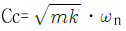
- Cc=2mkㆍωn
- Cc=2mㆍωn
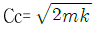
(정답률: 알수없음)
63. 진동에서 질점의 변위가 다음 식으로 표시될 때 이 운동의 위상각 ø를 옳게 표시한 것은?
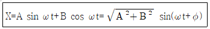
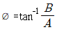
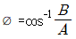
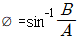
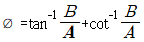
(정답률: 알수없음)
64. 아래 그림과 같이 놓여진 물체가 진동할 때의 고유 진동수는?
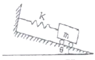
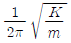
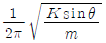
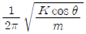
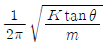
(정답률: 알수없음)
65. 그림(a)와 같은 진동계를 압축하여 그림(b)와 같이 만들었다. 압축된 후의 고유진동수는 몇 배로 변하는가? (단, 다른 조건은 변함없다고 가정한다.)
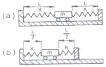
- 2배
- √2배
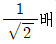
- 변하지 않는다.
(정답률: 알수없음)
66. 다음은 자동차의 진동에 관한 설명이다.( ① )안에 공통으로 들어갈 가장 알맞은 것은?
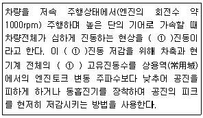
- 서어지(surge)
- 와인드업(wind up)
- 브레이크 져더(brake judder)
- 린체스터(lanchester)
(정답률: 알수없음)
67. 운동방정식이 2x + 20x = 6sin 3t 로 표시되는 진동계의 정상상태 진동의 진폭은 얼마인가? (단, 진폭의 단위는 cm 이다.)
- 1.5
- 2
- 2.5
- 3
(정답률: 알수없음)
68. 전달력이 항상 외력보다 작아 차진이 유효한 영역은? (단, f:강제진동수, fn:고유진동수)
- f/fn=1
- f/fn＜√2
- f/fn=√2
- f/fn＞√2
(정답률: 알수없음)
69. 방진재에 대한 설명으로 옳지 않은 것은?
- 금속스프링은 감쇠가 거의 없으며, 공진시 전달율이 매우 큰 편이다.
- 금속스프링의 종류는 다양한 편이며, 고주파 차진에 탁월한 성능을 보인다.
- 공기스프링은 별도의 댐퍼가 필요한 경우가 많다.
- 공기스프링은 부하능력이 광범위하며, 지지하중이 크게 변하는 경우는 높이 조정변에 의해 기계높이를 일정레벨로 유지시킬 수 있다.
(정답률: 알수없음)
70. x1=cos5t 와 x2=2cos(6+0.2)t를 합성하면 맥놀이(beat)현상이 일어난다. 이 때 울림진동수는?
- 0.0159 Hz
- 0.0318 Hz
- 3.142 Hz
- 62.82 Hz
(정답률: 알수없음)
71. 감쇠 자유진동을 하는 진동계에서 진폭이 4사이클 뒤에 50%만큼 감쇠됨을 관찰하였다. 이 계의 감쇠비는?
- 0.017
- 0.022
- 0.028
- 0.173
(정답률: 알수없음)
72. 그림과 같은 보의 횡진동에서 좌단의 경계조건을 옳게 표시한 것은?
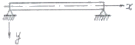
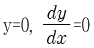
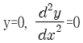
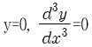
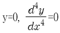
(정답률: 알수없음)
73. 다음 그림에서 m = 80kg, K = 5 x 106N/m, 질량 m 에는 F=(t)10 sin 220t N 의 힘이 작용한다. 이 때 질량 m의 동적변위 진폭은?
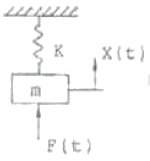
- 8.87 x 10-3 mm
- 6.86 x 10-3 mm
- 4.43 mm
- 3.43 mm
(정답률: 알수없음)
74. 회전기계의 진동을 억제하기 위한 대책으로 가장 거리가 먼 것은?
- 불평형력을 증대시켜 회전진동을 감쇠
- 위험속도의 회피운전
- 회전 축의 정렬각 조정
- 베어링 강성의 최적화
(정답률: 알수없음)
75. 방진대책을 발생원, 전파경로, 수진측 대책으로 구분할 때, 다음 중 발생원 대책과 거리가 먼 것은?
- 기초증량을 부가 및 경감시킨다.
- 수진점 근방에 방진구를 판다.
- 탄성지지한다.
- 기진력을 감쇠시킨다.
(정답률: 알수없음)
76. 진동계를 전기계로 대치할 때의 상호 대응관계로 옳은 것은?
- 질량 (m) = 전류 (i)
- 변위 (x) = 임피던스 (L)
- 힘 (F) = 전압 (E)
- 스프링정수 (K) = 전기속도 (R)
(정답률: 알수없음)
77. 그림과 같은 2자유도 진동계가 있다. 질량이 같은 두 물체를 평행 위치로부터 똑같이 반대방향으로 X0 만큼씩 변위를 준 후 놓았을 때의 진동수는? (단, 중력의 영향은 무시한다.)
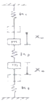
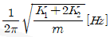
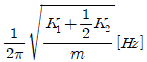
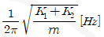
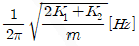
(정답률: 알수없음)
78. 다음 진동방지계획을 세우는 일반적인 순서를 옳게 나열한 것은?
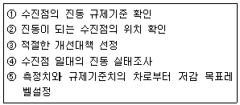
- ① - ② - ③ - ④ - ⑤
- ① - ④ - ② - ⑤ - ③
- ② - ④ - ① - ⑤ - ③
- ④ - ① - ② - ③ - ⑤
(정답률: 알수없음)
79. 100kg 질량을 갖는 기계가 1800rpm으로 회전하고 있다. 회전 시 불평형력이 작용하며 같은 스프링 2개를 병렬연결하여 방진효과 20dB를 얻고자 한다. 이 때 스프링 1개의 스프링 정수는 약 얼마이어야 하는가?
- 323 kN/m
- 161 kN/m
- 26 kN/m
- 4 kN/m
(정답률: 알수없음)
80. 정적처짐이 0.7cm인 고무절연기 위에 엔진이 설치되어 있다. 엔진속도가 2100rpm일 때 회전불균형의 몇 %가 바닥에 전달되는가?
- 약 3%
- 약 6%
- 약 8%
- 약 10%
(정답률: 알수없음)
5과목: 소음진동 관계 법규
81. 소음진동규제법규상 환경기술인의 업무를 방해하거나 환경기술인의 요청을 정당한 사유 없이 거부한 자에 대한 벌칙기준은?
- 50만원 이하의 벌금
- 100만원 이하의 과태료
- 6개월 이하의 징역 또는 200만원 이하의 벌금
- 1년 이하의 징역 또는 500만원 이하의 벌금
(정답률: 알수없음)
82. 다음 중 환경정책기본법령상 소음환경기준이 가장 낮은 지역은?
- 낮시간대 도로변지역의 준공업지역
- 낮시간대 일반지역의 상업지역
- 밤시간대 도로변지역의 상업지역
- 밤시간대 일반지역의 전용공업지역
(정답률: 알수없음)
83. 소음진동규제법규상 확인검사대행자와 관련한 행정처분기준 중 확인검사대행자 준수사항을 위한한 경우의 각 위반차수별(1차~4차) 행정처분으로 가장 적합한 것은?
- 1차: 조업정지 5일, 2차: 조업정지 10일, 3차: 조업정지 30일, 4차: 조업정지 6개월
- 1차: 조업정지 10일, 2차: 조업정지 30일, 3차: 조업정지 6개월, 4차: 사업장 이전명령
- 1차: 시정명령, 2차: 개선명령, 3차: 경고, 4차: 등록취소
- 1차: 경고, 2차: 경고, 3차: 경고, 4차: 등록취소
(정답률: 알수없음)
84. 다음은 소음진동규제법상 운행차의 개선명령에 관한 사항이다. ( )안에 가장 적합한 것은?
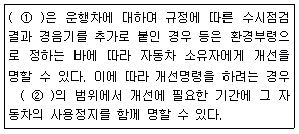
- ① 특별시장ㆍ광역시장 또는 시장ㆍ군수ㆍ구청장, ② 10일 이내
- ① 특별시장ㆍ광역시장 또는 시장ㆍ군수ㆍ구청장, ② 30일 이내
- ① 환경부장관, ② 10일 이내
- ① 환경부장관, ② 30일 이내
(정답률: 알수없음)
85. 소음진동규제법령상 과태료 부과기준에 관한 설명으로 거리가 먼 것은?
- 일반기준에 있어서 위법행위의 횟수에 따른 부과기준은 해당 위반행위가 있은 날 이전 최근 3년간 같은 위반행위로 부과처분을 받은 경우에 적용한다.
- 부과권자는 위반행위의 동기와 그 결과를 고려하여 과태료 금액의 2분의 1의 범위에서 이를 감경할 수 있다.
- 관계공무원의 출입ㆍ검사를 거부ㆍ방해 또는 기피한 자에 대한 각 위반차수별 과태료 부과금액은 1차: 30만원, 2차: 40만원, 3차 이상 위반: 50만원 이다.
- 운행차 소음허용기준을 초과한 자동차 소유자로서 배기 소음허용기준을 2dB(A) 미만 초과한 자에 대한 각 위반차수별 과태료 부과금액은 1차: 10만원, 2차: 10만원, 3차 이상 위반: 10만원 이다.
(정답률: 알수없음)
86. 소음진동규제법상 6개월 이하의 징역 또는 200만원 이하의 벌금에 처하는 경우가 아닌 것은?
- 생활소음ㆍ진동의 규제기준 초과에 따른 작업시간 조정 등의 명령을 위반한 자
- 운행차의 소음이 운행자 소음허용기준을 초과하여 받은 개선명령을 위반한 자
- 배출시설 설치신고 대상자가 신고를 하지 아니하고 배출시설을 설치한 자
- 이동소음 규제지역에서 이동소음원의 사용금지 또는 제한조치를 위반한 자
(정답률: 알수없음)
87. 소음진동규제법규상 생활소음 규제기준으로 옳은 것은? (단, 단위는 dB(A), 녹지지역에 있는 확성기(옥내에서 옥외로 소음이 나오는 경우)이며, 특정소음 등에 따른 보정치는 고려하지 않는다.)
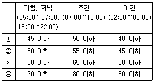
- ①
- ②
- ③
- ④
(정답률: 알수없음)
88. 소음진동규제법규상 이동소음의 원인을 야기시키는 기계ㆍ기구(이동 소음원)의 종류로 가장 거리가 먼 것은? (단, 그 밖에 환경부장관이 인정하여 지정ㆍ고시하는 기계 및 기구 등은 제외)
- 행락객이 사용하는 음향기계 및 기구
- 이동하며 영업을 하기 위하여 사용하는 확성기
- 음향 장치를 부착하여 운행하는 이륜자동차
- 집회ㆍ시위시 사용하는 확성기
(정답률: 알수없음)
89. 소음진동규제법규상 “환경부령으로 정하는 특정공사” 기준에 해당하지 않는 것은? (단, 특정공사의 사전신고 대상 기계ㆍ장비를 5일 이상 사용하는 공사에 한함)
- 연멱적이 1천제곱미터 이상인 건축물의 건축공사 및 연면적이 3천 제곱미터 이상인 건축물의 해체공사
- 구조물의 용적 합계가 1천세제곱미터 이상 또는 면적합계가 1천제곱미터 이상인 토목건설공사
- 총연장이 200미터 이상 또는 굴착 토사량의 합계가 200세제곱미터 이상인 굴정공사
- 면적 합계가 500제곱미터 이상인 토공사ㆍ정지공사
(정답률: 알수없음)
90. 소음진동규제법규상 특정공사와 관련한 공사장 방음시설 설치기준으로 옳은 것은?
- 방음벽시설 전후의 삽입손실치는 최소 10dB 이상되어야 한다.
- 방음벽시설의 높이는 2.5m 이상되어야 한다.
- 삽입손실 측정을 위한 측정지점은 음원으로부터 3m 이상 떨어진 노면 1.2m 지점이어야 한다.
- 공사장 인접지역에 고층건물 등이 위치하고 있어, 방음벽시설로 인한 음의 반사피해가 우려되는 경우에는 흡음형 방음벽시설을 설치하여야 한다.
(정답률: 알수없음)
91. 소음진동규제법규상 운행자동차의 배기소음(①) 및 경적소음(②) 허용기준은? (단, 2006년1월1일 이후에 제작되는 이륜자동차 기준)
- ① 100dB(A) 이하, ② 110dB(C) 이하
- ① 100dB(A) 이하, ② 112dB(C) 이하
- ① 1⑤dB(A) 이하, ② 110dB(C) 이하
- ① 1⑤dB(A) 이하, ② 112dB(C) 이하
(정답률: 알수없음)
92. 소음진동규제법규상 주거지역, 주간(06:00~22:00)에서 생활진동 규제기준으로 옳은 것은? (단, 작업시간, 특정공사 등에 따른 (특정공사 작업진동 등)규제기준치 보정 등의 기타 경우는 고려하지 않음)
- 65 dB(V) 이하
- 60 dB(V) 이하
- 75 dB(V) 이하
- 55 dB(V) 이하
(정답률: 알수없음)
93. 소음진동규제법상 측정망 설치계획에 관한 설명 중 옳지 않은 것은?
- 측정망 설치계획의 고시는 최초로 측정소를 설치하게 되는 날의 3개월 이전에 하여야 한다.
- 시ㆍ도지사가 측정망설치계획을 결정ㆍ고시하려는 경우에는 그 설치위치 등에 관하여 미리 국토해양부장관의 의견을 들어야 한다.
- 측정망 설치계획에는 측정망의 설치시기가 포함되어야 한다.
- 측정망 설치계획에는 측정소를 설치할 토지 또는 건축물 위치 및 면적이 포함되어야 한다.
(정답률: 알수없음)
94. 소음진동규제법령상 배출시설 설치허가를 받아야 하는 대통령령으로 정하는 지역 중 학교 또는 종합병원 등은 그 부지경계선으로부터 직선거리 최대 얼마이내의 지역인가?
- 30 미터 이내
- 50 미터 이내
- 100 미터 이내
- 200 미터 이내
(정답률: 알수없음)
95. 소음진동규제법령상 소음진동배출시설의 설치신고 또는 설치허가 대상에서 제외되는 지역이 아닌 것은? (단, 시ㆍ도지사가 환경부장관의 승인을 받아 지정ㆍ고시한 지역 등은 제외)
- 산업입지 및 개발에 관한 법률에 따른 산업단지
- 국토의 계획 및 이용에 관한 법률 시행령에 따라 지정된 전용공업지역
- 자유무역지역의 지정 및 운영에 관한 법률에 따라 지정된 자유무역지역
- 도시 및 주거환경정비법률에 따라 지정된 광역도시개발지역
(정답률: 알수없음)
96. 소음진동규제법규상 확인검사대행자가 등록한 사항 중 “환경부령으로 정하는 중요사항”의 변경에 해당하지 않는 것은?
- 측정기기 대수 증감
- 사업장소재지 변경
- 확인검사대행자의 양도ㆍ상속 또는 합병
- 상호 또는 대표자 변경
(정답률: 알수없음)
97. 소음진동규제법규상 소음발생건설기계의 소음도 검사성적서에 기재되는 인정내용으로 가장 거리가 먼 것은?
- 제작사
- 최소출력
- 제작국
- 음향파워레벨
(정답률: 알수없음)
98. 환경정책기본법상 “환경보전”의 용어 정의에 해당하는 행위로 가장 거리가 먼 것은?
- 환경오염으로부터 환경을 보호하는 행위
- 오염된 환경을 개선하는 행위
- 환경을 양호한 상태로 이용하는 모든 행위
- 쾌적한 환경의 상태를 유지ㆍ조성하기 위한 행위
(정답률: 알수없음)
99. 다음은 소음진동규제법규상 제작자동차 소음허용기준의 가산적용(기준)에 관한 사항이다. ( )안에 알맞은 것은? (단, 2006년 1월 1일 이후에 제작되는 자동차기준)
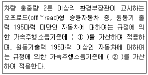
- ① 2dB(A),② 1dB(A)
- ① 1dB(A),② 2dB(A)
- ① 5dB(A),② 10dB(A)
- ① 10dB(A),② 5dB(A)
(정답률: 알수없음)
100. 소음진동규제법규상 소음배출시설기준에 해당하지 않는 것은?
- 편기를 제외한 5대 이상의 직기
- 100대 이상의 공업용 재봉기
- 2대 이상의 자동포장기
- 4대 이상의 시멘트벽돌 및 블록의 제조기계
(정답률: 알수없음)
음압레벨 = 음향파워레벨 - 20log(거리/기준거리)
= 1⑤ - 20log(10/1)
= 85 dB
하지만, 이 위치는 건물내부의 2면이 만나는 모서리이므로, 반사판 효과로 인해 음압레벨이 증폭된다. 일반적으로 이러한 상황에서는 약 4~6 dB 정도의 증폭이 발생한다고 알려져 있다. 따라서, 이 문제에서는 4 dB의 증폭을 가정하여 최종 음압레벨을 계산한다.
최종 음압레벨 = 85 + 4
= 89 dB
따라서, 정답은 "74 dB"가 아니라 "70 dB"이다.